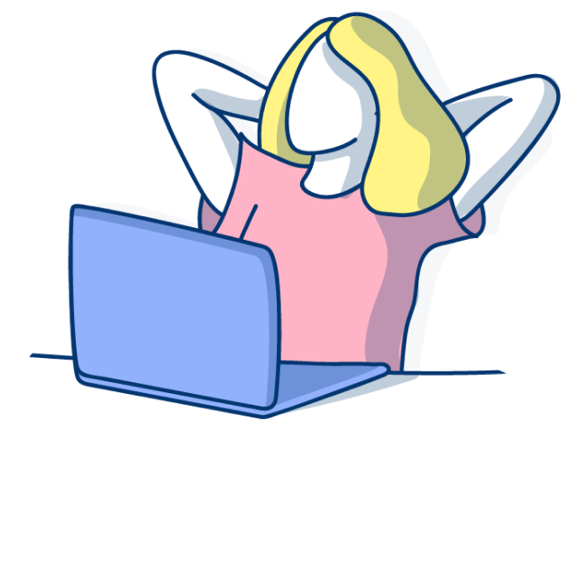
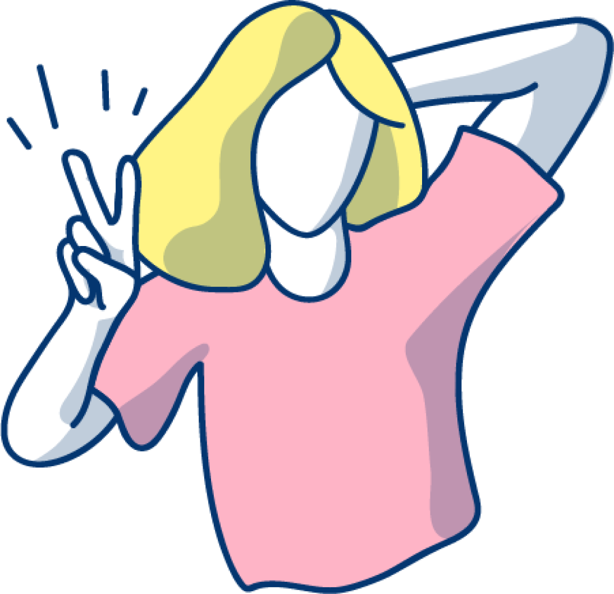

Hola, Soy Marta
una diseñadora apasionada por la innovación, la creatividad y el ser humano
Un poco sobre mi
Tras formarme como diseñadora industrial y aplicar mis conocimientos en este sector trabajando cuatro años en un estudio en China, he visto la necesidad de ampliar mis conocimientos al mundo digital, a partir de un enfoque customer centric.
Los aprendizajes del master en diseño de experiencias digitales en BAU (Escuela Universitaria de diseño de Barcelona), me permiten enfrentarme a cada nuevo proyecto con el objetivo de crear experiencias que mejoren la vida y aporten valor a los usuarios, combinando objetivos de negocio y necesidades de los clientes.
Ahora busco mi nueva aventura donde poder crecer tanto profesional como personalmente.
Más InformaciónCosas que he hecho
Necesitas más?
Tienes un proyecto en mente que quieras desarrollar?
Estás buscando una diseñadora para unirse a tu equipo?
No dudes en contactarme a martalaplana@gmail.com
